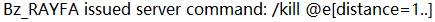
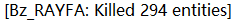
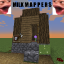

MilK 是一位实习记者，上班时受上级委托前往泉源村调查一起过去十年尚未结案的案件。
当 MilK 在去调查的路上睡着后，一起灵异事件开启了这个小村庄的悲惨回忆...
MilK 是一位实习记者，上班时受上级委托前往泉源村调查一起过去十年尚未结案的案件。
当 MilK 在去调查的路上睡着后，一起灵异事件开启了这个小村庄的悲惨回忆...
"MMP第一张有正经剧情的图（虽然我一期的时候的庞大设想因为技术力被毙了），期待大家的游玩反馈"
--- sky_bow_chrs
"阿巴阿巴"
--- Chen_Mo_cht
"写...写什么"
--- Taste_Steak
"is very good"
--- Im_SwordFish
2021.4.3 - 2022.7.18
1.18.2
仅限 1 人游玩
预计 20 ~ 60 分钟 通关
单一 关卡
多重 结局
必备 材质包
剧情, 解谜, 极度轻微恐怖
- 总策划 -
- 副策划 -
- 文案组 -
- 命令组 -
- 建筑/内饰组 -
tuffcute_WDNMD, RAYFA_Bz, Kuuhakuchyan, CY_wl
- 大地形组 -
- 测试组 -
Taste_Steak 曾在创作时杀死了所有实体。(他用的是 BZ 的小号 Bz_RAYFA)
本地图的 LOGO 由 TUFF 在 SF 提供的图片的基础上进行 PS 制作而来的，然后在公投中获得最多票数。
2022.8.12 - 地图已发送给牛奶 (已接收地图但未作任何回应)
2022.7.25 - 对地图进行了微调
2022.7.19 - 地图测试完毕，进入等待发布阶段
2022.7.18 - 地图制作完毕，进入测试阶段
2022.7.17 - 创作者进行动态分组
2022.7.16 - 进入全面制作阶段
2022.7.15 - TUFF 退出制作
2022.7.15 - 游戏背景公布, 游戏流程重新梳理
2022.7.15 - 进入小范围制作阶段, XTS, CM, TUFF, SKB, TS 参与制作, BZ, KUU, LW 预定制作
2022.7.15 - 游戏版本从 1.17 升级为 1.18.2
2022.7.15 - 制作进程进入二期阶段
2022.7.14 - 泉源之花 制作计划再次被提及
2021.8.10 - 制作进程结束一期阶段
2021.7.16 - 不再开放地图预览版本
2021.7.16 - Taste_Steak 参与制作
2021.5.21 - 开放地图预览版本 (在地图正式发布前无法下载)
2021.5.5 - 开始制作官方攻略及成就 + 彩蛋页面
2021.5.4 - Kuuhakuchyan, Wu_Qi_Bz 参与制作
2021.5.3 - 不再对除主创作者外的创作者们进行分组
2021.4.30 - CY_wl 退出制作
2021.4.23 - Chen_Mo_cht 参与制作 (创作组)
2021.4.18 - CY_wl 参与制作 (创作组)
2021.4.18 - 泉源之花 正式开始制作, tuffkotte 参与制作 (创作组)
2021.4.9 - Chen_Mo_cht 参与制作 (剧情组)
2021.4.3 - 泉源之花 开始定稿, Im_SwordFish (主创作者), xtsdcb69 (剧情组), sky_bow_chrs (剧情组) 参与制作
2021.2.17 - 泉源之花 制作计划已提出